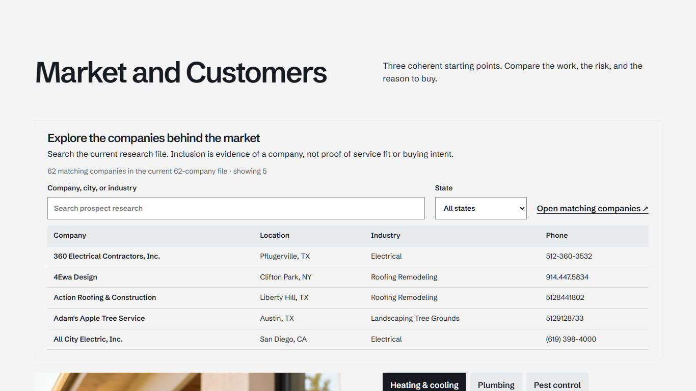
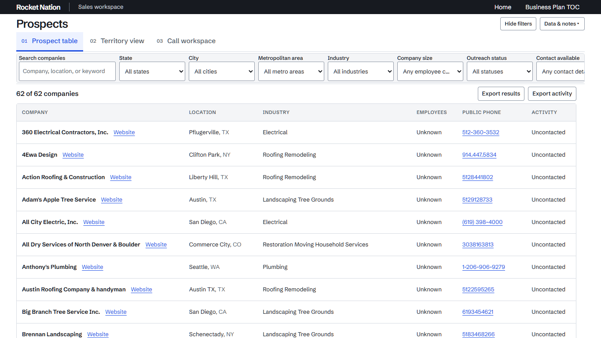
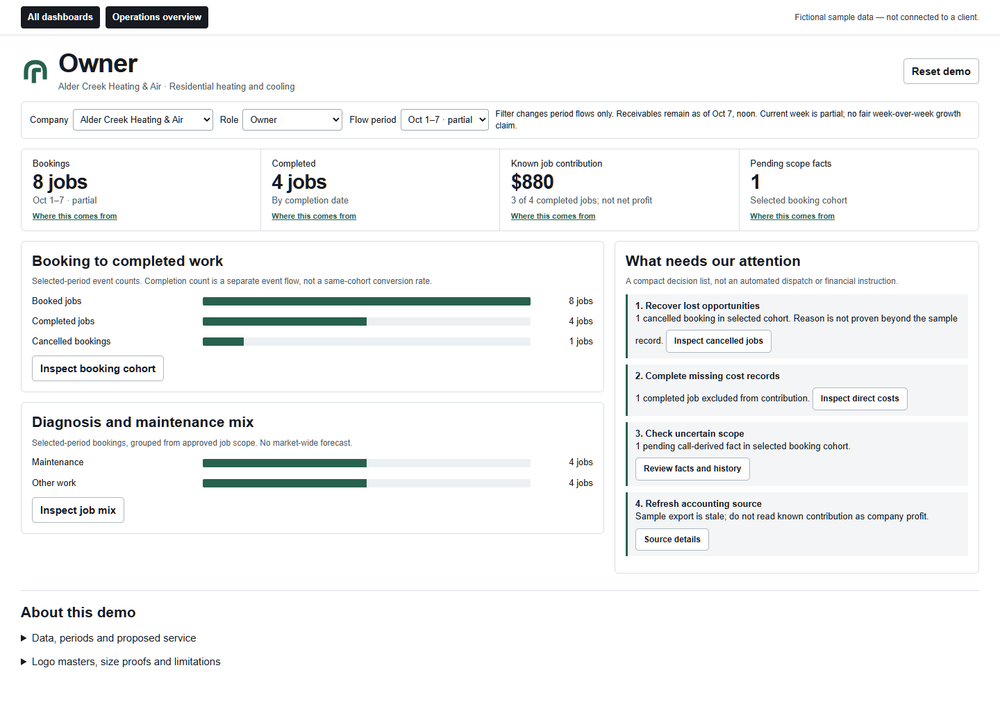
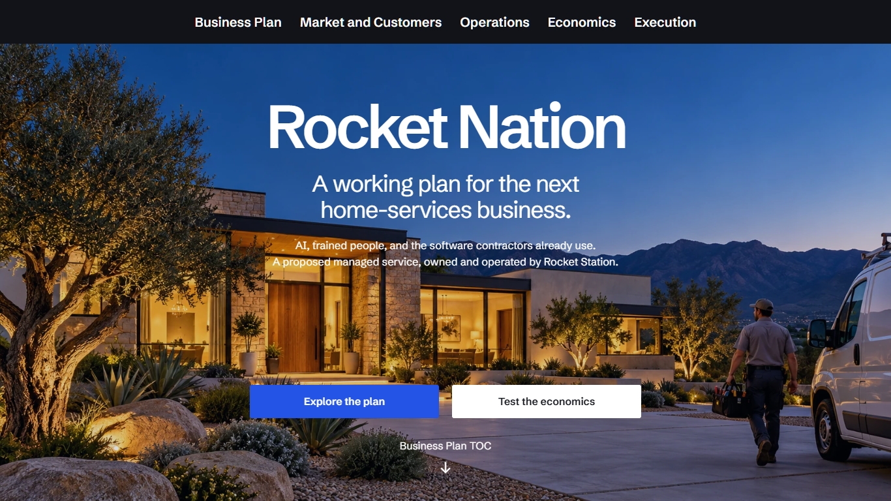
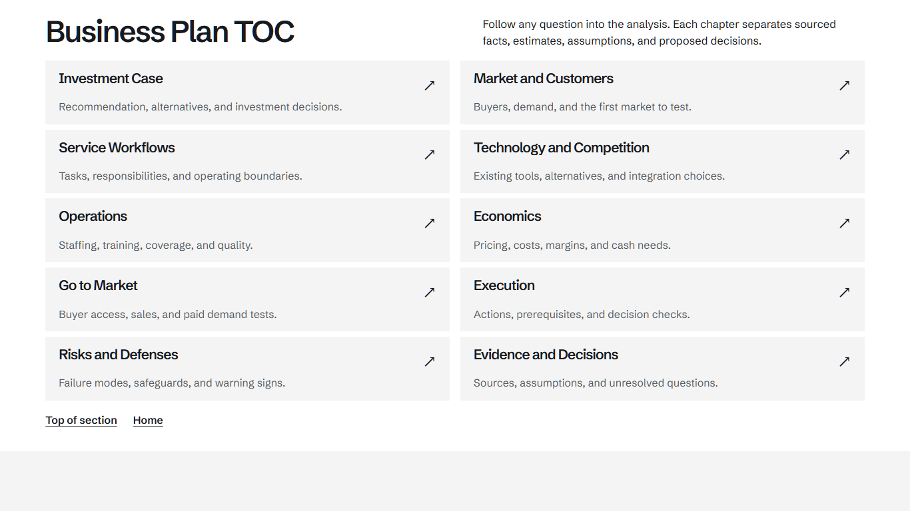
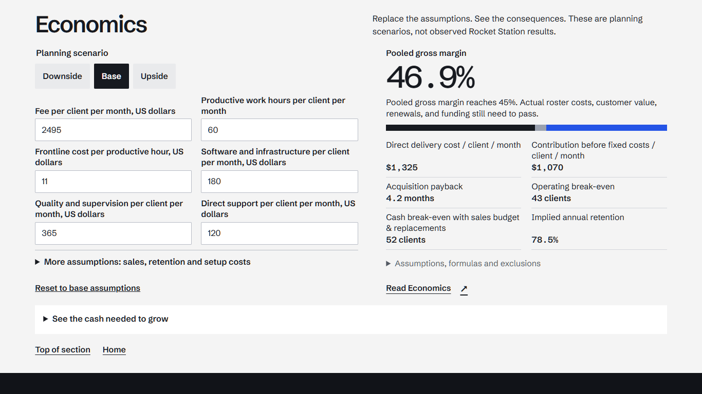
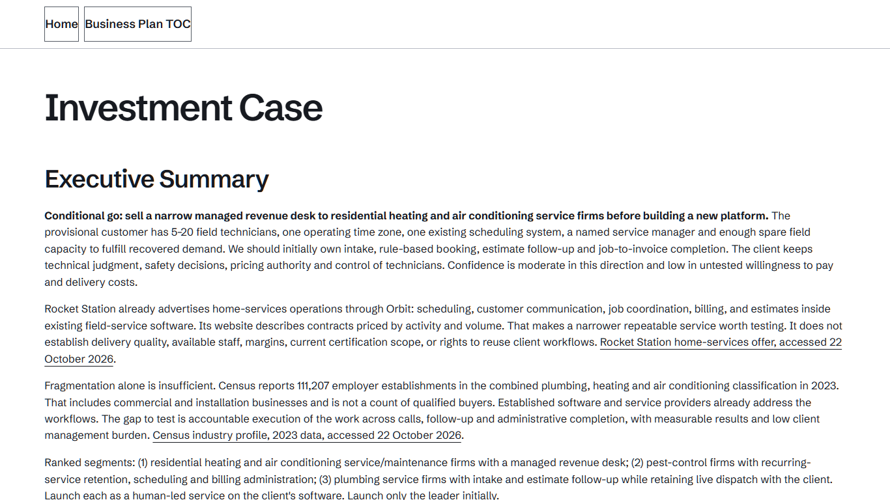
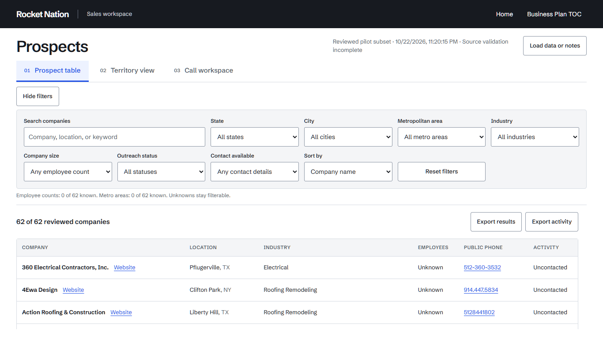
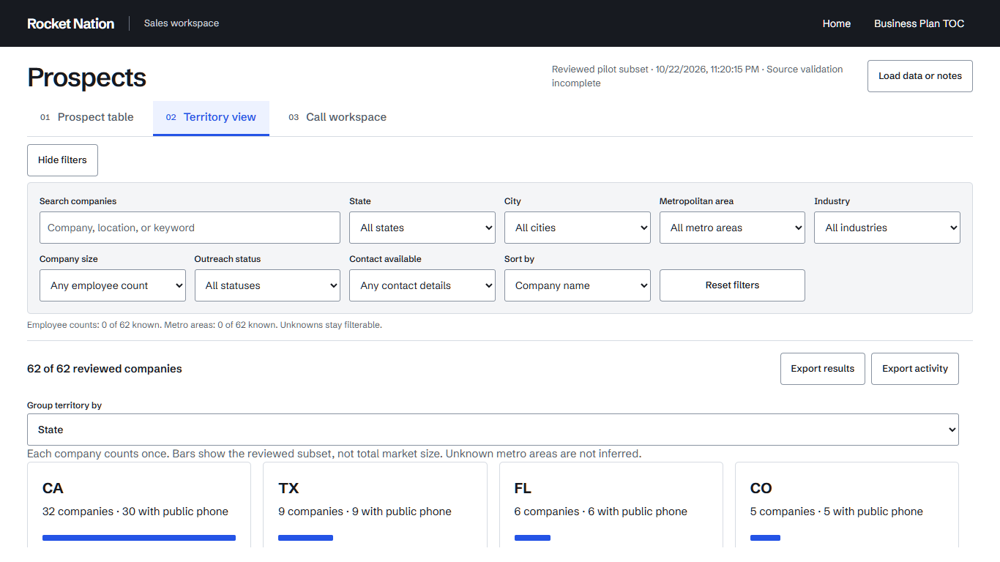
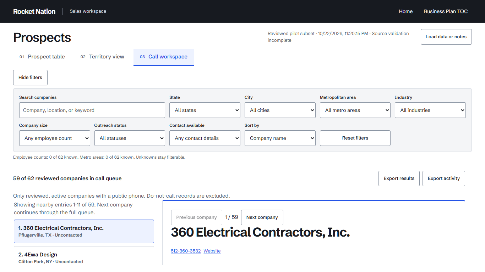

Search inside the market section

A live company preview connects the market analysis to the research file. Search by company, city, or industry; filter a state; then continue with those filters in the full workspace.
Rocket Nation · Working website review
Review the current website and three different ways to place the prospect system inside the business plan. Each proposal opens a working page at its proposed location.
This is the one current review page. It consolidates the scattered reading instructions; it does not replace or remove any of your website requirements.
The local revision now includes a compact fixed control area, state-dependent City and Metropolitan area filters, and twelve working fictional client dashboards. With filters expanded, the scrolling results region measured 75.13% of a 1366×768 window and 78.78% at 1440×900 and 700×900. The region includes its scrolling count/export row, not only table-body rows.
The dashboard examples cover heating and cooling, plumbing, and recurring cleaning, each with Owner, Financial controller, Operations and Field team views. They use fictional records and proposed system/call/human-review flows, not live client connections. The broad Research pool, real roster refresh and municipal participant integration remain separate pending work.


Yes. The saved readiness inventory records 15,493 broad source identities and 100 producer-labelled companies; that does not establish 100 independently verified sales prospects. The website still uses the older 62-row projection while field mapping and review labels await deliberate integration. The three populations are the company roster, broad Research pool and separate municipal research—not interchangeable lists. These are saved-file observations, not a live database query.
No deliberate 62-company computing ceiling is documented. The saved source output has grown, but the website projection has not yet been refreshed. Source quality and phase acceptance remain incomplete; a row-count increase does not establish commercial fit, phone reachability or national coverage.
Yes, but the fixed area is now much smaller. Hide filters shares the title row; the filters use a bounded horizontal strip, and coverage/source details live under Data & notes. The table, territory and call views share this structure. Restoring older notes preserves existing do-not-call restrictions.
Yes. The original implementation confused three views of one tool with three ways of incorporating the tool into the website. That has now been corrected. The three working placement proposals below are Market and Customers, the Business Plan TOC, and Execution. Their links open the requested tool view directly. No proposal has silently replaced your default website.
I attempted a direct local Claude review, but the recorded command failed with “Failed to authenticate: OAuth session expired and could not be refreshed.” No successful Claude model review or feedback was received. The cloud route prepared afterward is for you to upload files into your Claude Code cloud session. I have not uploaded this site to that cloud session or received its answer.
“Grant” meant your permission to send private website material for review. You already granted that permission. It did not sign Claude in, connect your cloud session, or mean a review had happened. The successful browser tests and local worker review were not Claude feedback.
Separately, the municipal GitHub Actions run 40155196213 returned REJECTED after its federation exchange received HTTP 400. No Haiku Messages API call or candidate dataset resulted. The separately owned authentication diagnosis is not a completed website review or accepted municipal delivery.
Use Open current website above, the three live proposals below, or the screenshot gallery. They show the current local files served on this computer. The older hosted website is a different revision and has not been updated by this work.
These are alternative placements in the website. The directory, territory view, and call workspace remain the same underlying prospect system.
My recommendation for explaining the business plan is Option 1: readers can inspect real company research alongside Market and Customers. Option 3 is the most direct entry for daily sales work. These are recommendations, not an assumed choice.
Read this page. The consolidated text report in your outbox contains the same decisions and a file inventory. You do not need to read logs, test scripts, old replies or both review archives.
The separate prospect-data session also has source catalogs, process assessments and continuation documents in the shared outbox. They are not outputs from this website revision and have not been replaced or deleted. The consolidated text report lists the observed filenames separately.
These links compare views of the same system, independent of the three website placement proposals.
These older images preserve the earlier revision and do not show the compact control changes above. Open the current page links to test the latest controls.







This review hub and its proposal links describe the files served from this copy of the project. They do not establish that these changes are on the older published website. Publication is a separate step.
Local changes: the working website includes the changes and proposal variants shown here. Tests establish the listed checks only, not flawless behavior.
Website publication: no new deployment.
GitHub: private backup is tracked separately in the project revision record. This page is not evidence that its own current bytes have been pushed, and a GitHub push does not deploy the website.
No Claude feedback or external reviewer approval is claimed here. Shared team notes, final source-data acceptance, and a valid review for this changed publication remain unresolved.